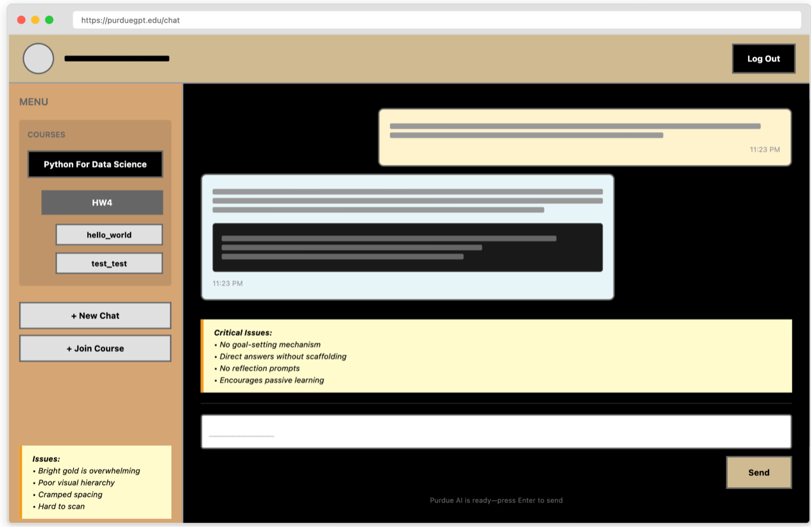
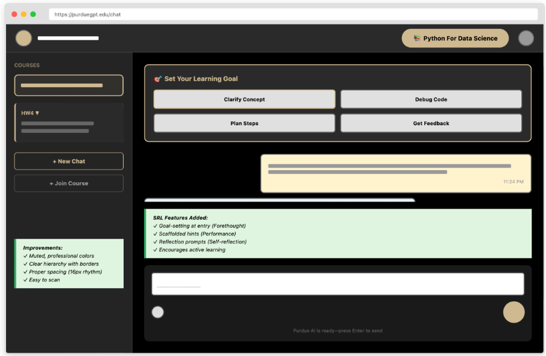
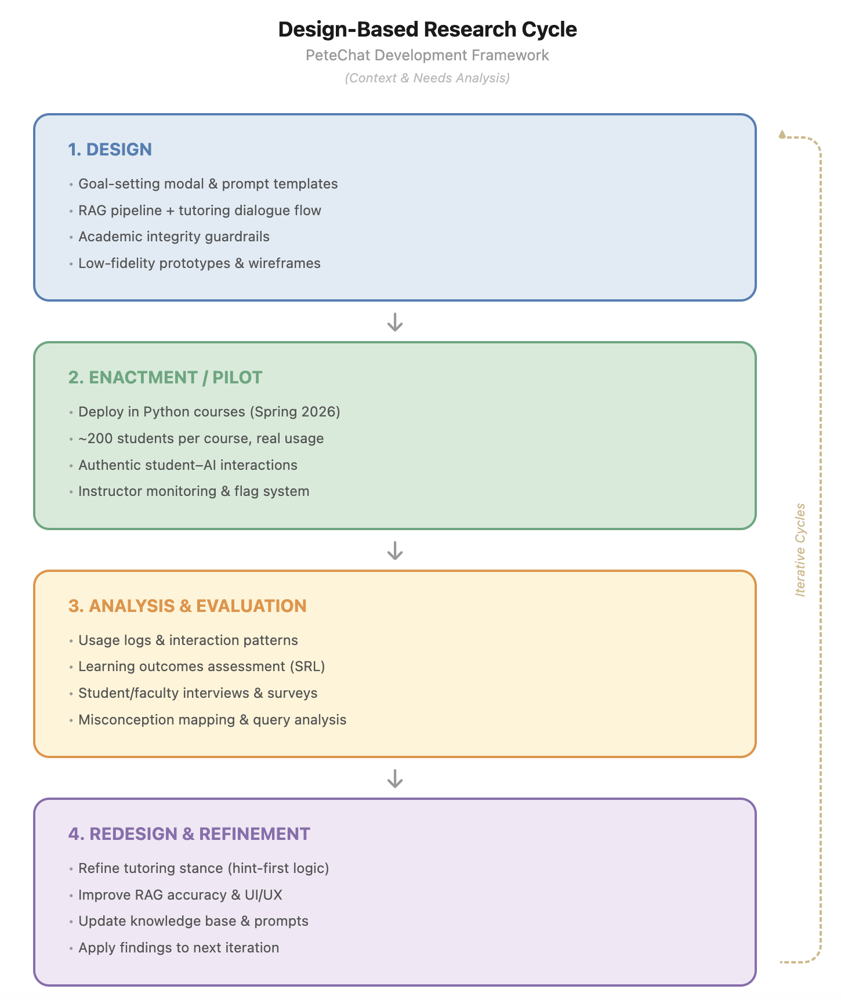
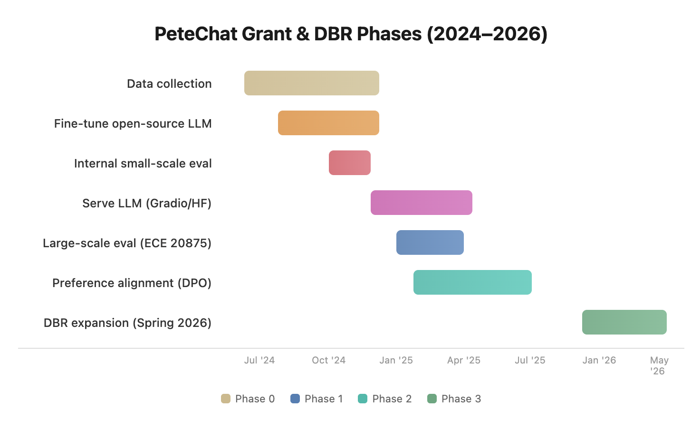
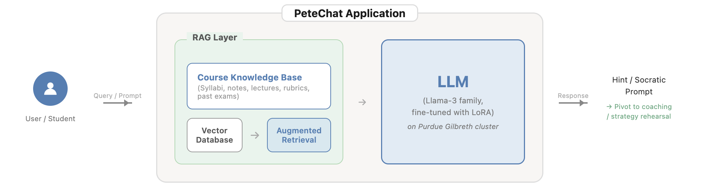
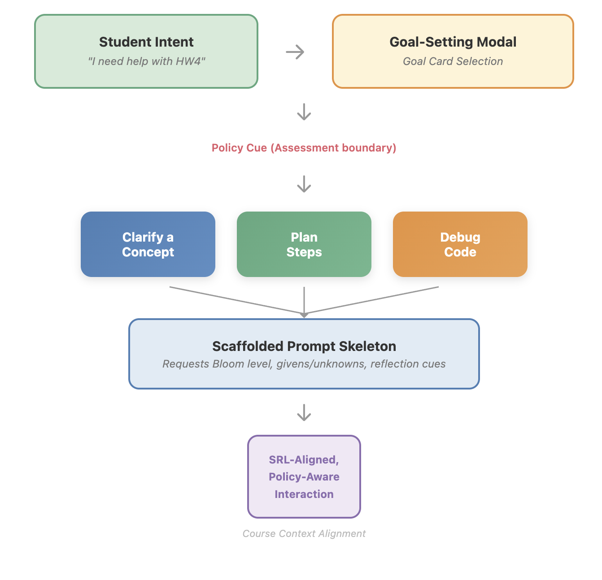
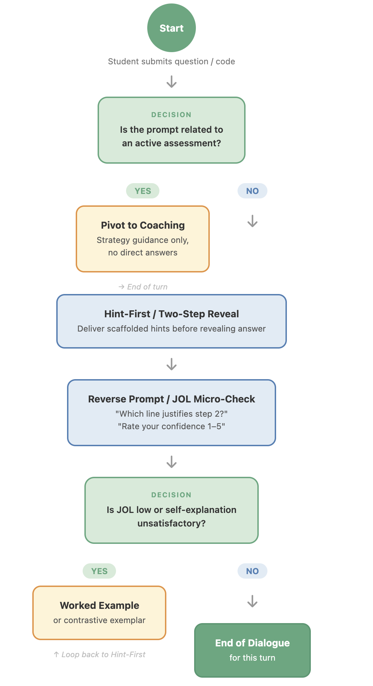

AI-Enabled Learning Design · Purdue University
PeteChat: Designing an AI Tutor That Teaches Students to Think
A design-based research project building a guardrailed, course-aligned AI learning assistant — engineered to scaffold thinking rather than deliver answers, and informed by real student behavior and stakeholder research.
Context
AI in the classroom — without giving up the learning
As generative AI tools became widely accessible to students, Purdue University faced a familiar tension: banning AI was neither realistic nor constructive, but generic tools like ChatGPT were creating real pedagogical problems. Students in demanding courses like ECE 20875 (Python, machine learning) were submitting near-perfect homework (>95%) while exam performance dropped — a clear signal that AI was being used to complete work, not to learn.
PeteChat (internally PeteGPT) was a direct response: a GPT-4 and Llama-3 powered AI tutor fine-tuned on verified Purdue course materials and built around a fundamental design principle — tutor, not solver. The project was funded by Purdue's Innovation Hub Teaching & Learning in an AI-Rich Environment program and developed in partnership with the Center for Instructional Excellence, Purdue Libraries, and RCAC.


Problem
Generic AI was inflating grades while degrading learning
Stakeholder research revealed a specific and serious problem pattern: students were pasting TA feedback directly into ChatGPT rather than processing it themselves. Homework scores were artificially high while exam performance lagged — a direct consequence of AI-as-answer-machine replacing AI-as-thinking-partner. Meanwhile, TAs were drowning in regrade requests from students who didn't understand why points were deducted, and instructors had no visibility into the questions students were actually asking.
The design challenge was not technical — it was pedagogical: how do you build an AI tool that is genuinely helpful without doing the learning for the student?
My Role
Design research, evaluation, and pedagogical alignment
As a core team member, I contributed to the design decision-making process, stakeholder evaluation sessions, and the translation of learning theory into dialogue design. My work focused on the pedagogical dimension of the system — ensuring that PeteChat's interaction model was grounded in self-regulated learning frameworks and that design decisions emerged from real stakeholder insights rather than assumptions.
I was involved across the formative evaluation cycle: helping design and conduct expert sessions with TAs, instructors, developers, and UX specialists, then synthesizing findings into actionable design decisions and principles that shaped the next prototype iteration.
Design Approach
Design-based research across four iterative phases
The project followed a design-based research (DBR) methodology — treating each semester of deployment as a design cycle with real students, real constraints, and real feedback. This approach prioritized ecological validity over laboratory control: we needed to see how the tool behaved in authentic classroom conditions, not ideal ones.


Foundation: Data collection and baseline tutor
Collected course-specific materials, constructed a baseline tutor, and fine-tuned open-source LLMs (Llama-3) on Purdue's Gilbreth GPU cluster. Internal evaluations enabled rapid iteration on what worked.
First deployment: Live with ECE 20875 undergraduates
PeteChat was deployed through Gradio/Hugging Face to students in a large undergraduate Python and machine learning course. Real student interactions provided the richest window into how learners actually engaged with an AI tutor under pressure.
Alignment: Direct Preference Optimization
Using preference data collected in Phase 1, we applied Direct Preference Optimization (DPO) to align the model's scaffolding style with what students found most helpful and trustworthy. Iterative tuning improved clarity, conciseness, and pedagogical consistency.
Scale: Campus-wide expansion
With a stable, preference-aligned tutor, PeteChat expanded into additional large undergraduate Python programming courses — moving from course-specific innovation to broader institutional integration.
Stakeholder Research
Four expert evaluation sessions before the next prototype
Before the second iteration, we conducted formative evaluation sessions with four stakeholders — two TAs for ECE 20875, one software developer, and one UX/UI expert with learning technology experience. Each session used semi-structured interviews tailored to the stakeholder's role, with participants interacting with the live prototype and reviewing sample outputs.


Key findings from the evaluation, organized by stakeholder:
Students (via TAs)
ChatGPT reliance was inflating homework scores while exam performance dropped. Students were pasting TA advice into ChatGPT instead of thinking through problems. High-value needs: debugging explanations (not fixes), study planners, and assignment clarification.
TAs & Instructors
Regrade requests without justification were a major time sink. Instructors wanted guardrails that refused direct homework answers and offered scaffolded hints with integrity reminders. All logistics answers needed "confirm on Piazza/Brightspace" disclaimers.
UX Designer
Critical onboarding gap: new users didn't know what to ask. Sidebar was closed by default — a blank-slate problem. Recommended: open sidebar with course-organized "Try asking…" example prompts, lower contrast chat backgrounds, visual outputs for multi-step answers.
Developer
Query rewriting and multimodal RAG were working well. Key priorities: minimize hallucinations, ensure faithful retrieval from course documents, establish a consistent "tutor tone" that aligned with how instructors actually taught.
Design Decisions
Eight decisions that shaped the next iteration
Each design decision addressed a specific finding from the evaluation cycle. They were not feature additions — they were responses to observed student behavior and stakeholder needs.
Homework guardrails with scaffolded hints
When PeteChat detects a query resembling an active assignment, it activates assessment-aware mode: refuse direct solutions, respond with step-by-step hints aligned with the instructor's method, and surface an academic integrity banner. If the student persists, redirect to office hours.
Logistics answers with freshness disclaimers
All logistics responses cite the source document with a timestamp and append: "For the most current information, verify on Brightspace or Piazza." This positions PeteChat as a first-pass convenience, not an authoritative oracle — protecting instructors from stale-information complaints.
Debugging as error-reading education
When students paste error messages, PeteChat explains what the error means in plain language, identifies the likely cause without fixing the code, and asks students to articulate what they think is wrong before offering further guidance. It teaches error-reading, not copy-paste patching.
Study planners and mock quiz generators
A "Study Planner" mode generates time-budgeted study schedules from syllabus metadata. A "Mock Quiz" feature generates practice questions from past exams, provides immediate feedback, and tracks which topics need more review — supporting self-regulated learning without integrity risk.
Regrade helper before human escalation
Before a student can submit a regrade request, PeteChat presents a "Regrade Helper" flow: retrieve the relevant rubric, explain which criteria led to deductions, ask the student to articulate why they think the grading was incorrect, then surface the option to escalate. Filters unjustified requests while educating students on rubric criteria.
Course-specific onboarding with default-open sidebar
The interface opens with a visible sidebar showing "Try asking…" prompt cards organized by current assignments. Examples cover concept clarification, debugging, study planning, and logistics — eliminating the blank-slate problem that left new users uncertain where to start.
Visual readability and structured outputs
Reduced contrast on the chat area. When queries imply multi-step workflows, PeteChat defaults to tables, numbered steps, or simple flowcharts rather than dense paragraphs. An optional share/verify action lets students forward an answer snippet to a peer or TA for confirmation.
Instructor dashboard with provenance and tone configuration
Instructors can upload syllabi, rubrics, and announcements through a lightweight portal. Every response shows which course documents were retrieved (provenance citations). Per-course tone configuration and alignment audits let instructors tune the assistant without touching code.

Pedagogical dialogue flow: prompts are routed through an assessment check → coaching pivot or Hint-First/Two-Step Reveal → Reverse Prompt/JOL Micro-Check → worked example if needed. Every turn scaffolds thinking rather than delivering answers.
Design Principles
Eight principles that guide every trade-off
Tutor, not solver
Default to hinting and scaffolding. Teach how to think — debug explanations, step-by-step reasoning — not what to answer.
Align to the course
Ground all responses in instructor-provided materials. Show provenance. Add freshness disclaimers for logistics to protect instructors.
Respect academic integrity
Include guardrails and integrity reminders on homework. Encourage students to read and follow instructions before asking the AI.
Reduce TA overhead
Automate clarity (summaries of instructions), regrade explanations from rubrics, and handle repeat questions with consistent, concise answers.
Design for clarity and momentum
Open sidebar with "Try asking…" examples per homework/exam. Keep answers concise, visual when helpful, and readable.
Flexible control for staff
Let instructors upload/update content, set tone, and review alignment metrics. Easy to tune without writing code.
Trust through transparency
Show sources, note uncertainty, and provide optional share/confirm actions so students can verify with peers or TAs.
Time-aware support
Offer study plans and mock quizzes scoped to available time and upcoming exams to keep students on track.
Impact
A principled model for assessment-aware AI in higher education
PeteChat established a replicable design pattern for AI tutors that preserve academic integrity without banning AI from the learning environment. Rather than leaving students to navigate generic tools with no guardrails, the system gave instructors a configurable, pedagogically aligned assistant — one that reduced TA workload while actively reinforcing the learning behaviors that homework and exams are supposed to develop.
After Phase 1 deployment in ECE 20875, the system expanded to additional large undergraduate programming courses in Phase 3, representing a transition from course-specific innovation to campus-level infrastructure. The formative evaluation methodology — conducting expert sessions across student, instructor, developer, and UX perspectives before each design cycle — established a stakeholder-research model applicable to any future AI tool development at the institution.
The project's design principles have been written up as a design case contributing to the emerging literature on generative AI in higher education — advancing the field's understanding of how AI systems can be deliberately designed to support learning processes without undermining the integrity of assessment.